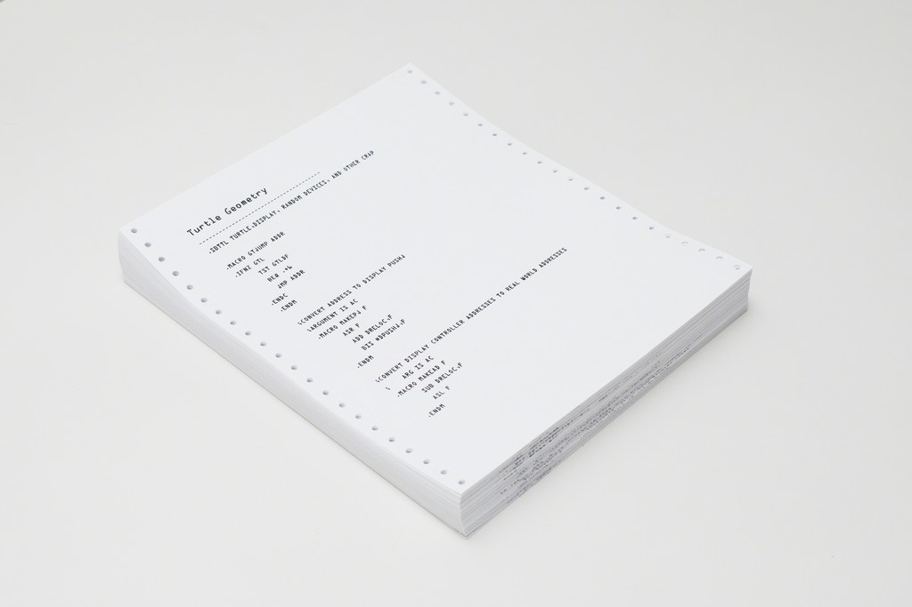
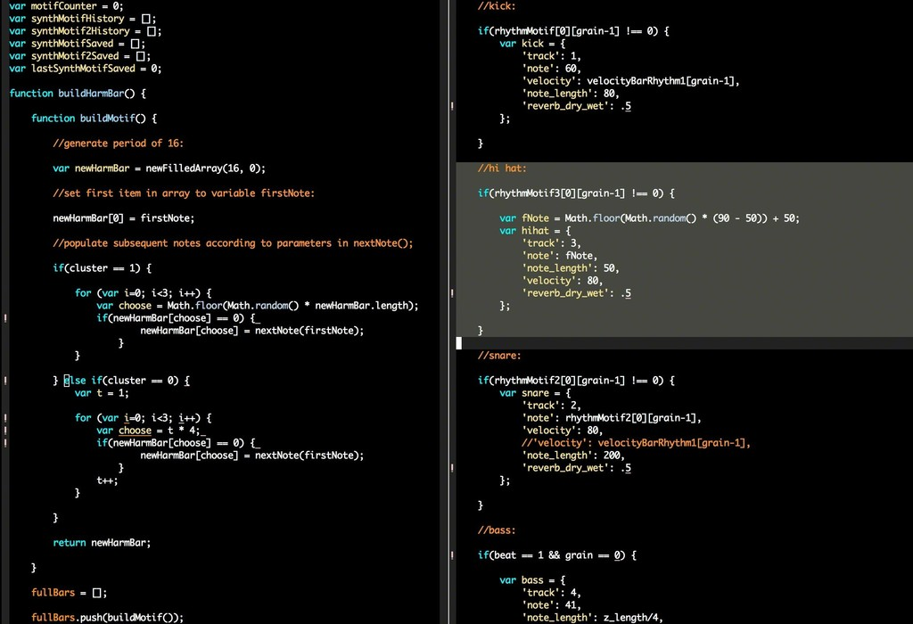
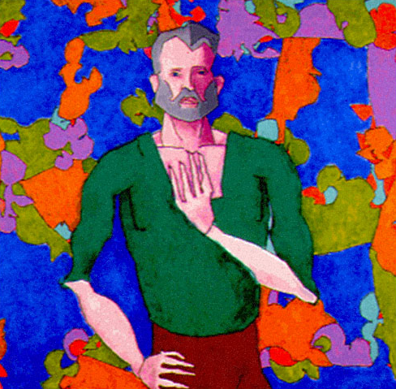
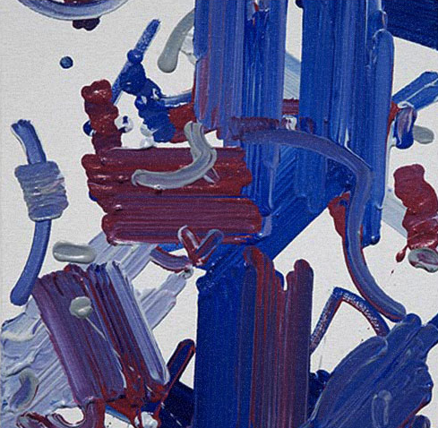
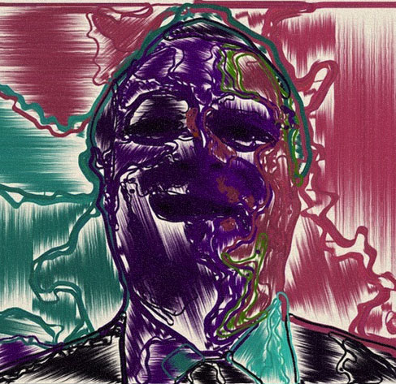

Code & Art
New Frontiers
Curated by Raven Eyex
WTH is Art anyway?
Del latín ars, y este del griego téchnē [τέχνη].
The principles or methods employed in making something or attaining an objective.
WTH is Art anyway?
Any human activity or product made with an aesthetic and/or communicative purpose through which ideas, emotions, concepts -or in general: worldviews- are expressed through the use of diverse resources and means
Merriam-Webster / Oxford
Code as the Medium
Code is used to create the Artwork but the code itself is not the artwork
Video Games
Computer Animation

Video Mapping
Experimental
Computer Art
Any form of art in which computers play a role in production or display of the artwork
Code as the Artwork
Code is used to create the Artwork and the code itself is a part of
The Algorithm Auction
The world’s first auction celebrating the art of code was held on March 27, 2015 at the Cooper Hewitt, Smithsonian Design Museum. It featured several prints of historically important algorithms as well as some early designs of important chipsets.
Turtle Geometry
Hypothetical Beats
var t;
Learning about art, using JavaScript. http://vart.institute/
Pixel Babe 01
Moebius 6hedrons Pure CSS
Pure CSS Francine
Machine-Made Art
The Artwork is created by a Robot or AI; the process is not subject to strict guidance and the aesthethic decisions are left to the Machine.
AARON
Interactive Robot Painting Machine
The Painting Fool
Shelley.ai
I remember his face in a look of horror, and it was agony and malice. I was trapped. I was trapped in this hospital bed.